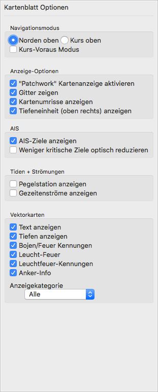
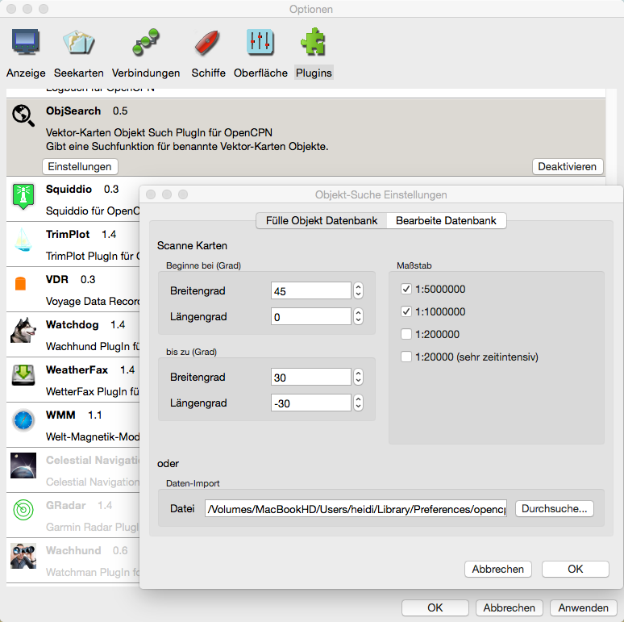
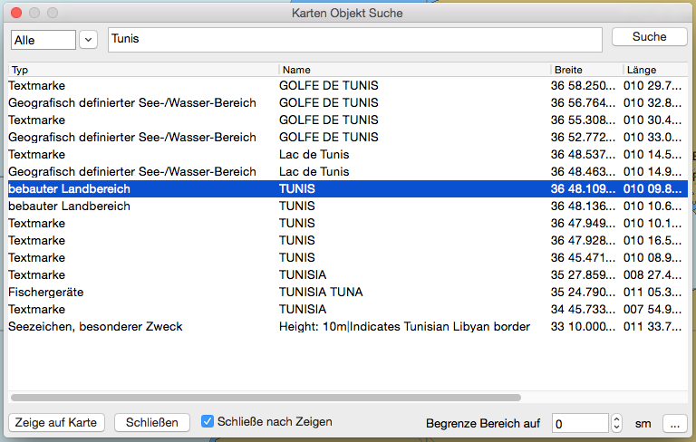
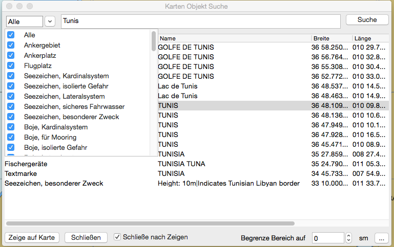
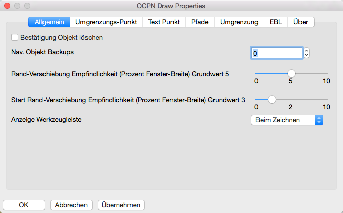
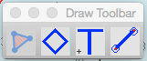
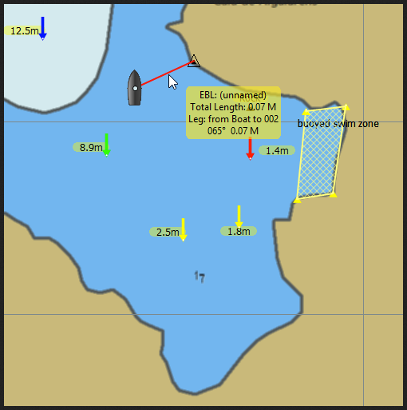

Einstellungen Seekarten
Ein großer Teil der Einstellungen für Karten sind ab Version 5.0 in die Kartenblatt Optionen überführt worden. Siehe hierzu weiter unten.
Die Einstellungen für Seekarten für Seekarten umfassen fünf Laschen.
Lasche "Karten-Dateien:" Zur Installation der Seekarten in OpenCPN.

Das wird im Detail hier behandelt.
Lasche "Vektorkarten Anzeige:" Siehe dazu auch die Kartenblatt Optionen.

Mehr über Vektorkarten siehe hier.
Lasche "Karten-Gruppen:"

Mehr über Karten-Gruppen siehe hier.
Lasche "Tiden + Strömungen"

Aktive Datensätze Die verwendeten Tiden-/Stromdaten. Siehe unter Tiden und Strömungen. Zu dem mitgeliefertem Datensatz können mit dem Button "Datensatz hinzu..." weitere eigene Datensätze hinzugefügt werden. Es öffnet sich ein Datei-Fenster zur Auswahl der Datei.
Mehr über Tiden und Strömungen siehe hier.
Lasche "S63 Karten"
Diese Lasche erscheint nur, wenn das S63 Plugin aktiviert ist. Informationen zu S63 auf der o-charts.org Homepage.

Kartenblatt Optionen
Die Kartenblatt Optionen werden mit Klick auf das rechte Symbol auf der Werkzeugleiste rechts  geöffnet.
In dem dann erscheinenden Fenster können folgende Einstellungen gemacht werden:
geöffnet.
In dem dann erscheinenden Fenster können folgende Einstellungen gemacht werden:

Navigationsmodus: "Norden oben" auf der Karte oder "Kurs oben" auf der Karte.
Für Kurs-Voraus Modus Siehe hier.
Für die Anzeige-Optionen gibt es:
Quilting "Patchwork" Kartenanzeige aktivieren Siehe hier.
Gitter zeigen Überlagert der Karte ein sich automatisch anpassendes Längen/Breiten Netz. Das Gitter ist nützlich bei Vektor-Karten, die das nicht von Haus aus haben.
Kartenumrisse anzeigen Es werden die Ränder der verfügbaren Karten gezeigt. Vektor Karten sind grün, RasterKarten sind rot und verfügbare größere
CM93 Karten sind purpur. CM93 Kartenumrisse erscheinen nicht im Quilting Modus. Als Vorsichtsmaßnahme sind bei CM93 die Umrisse von Gefahrenstellen mit groß skalierten
Karten auch bei "Kartenumrisse abgeschaltet" verfügbar, wenn Quilting aus ist und die Skalierung groß genug ist. Bei einem Maßstab von 1:200.000 oder größer werden diese
isolierten Inseln und Gefahrenstellen gezeigt. Es wird daher empfohlen, bei großen Passagen in CM93 kein Quilting zu verwenden. Siehe hier.
Tiefeneinheit (oben rechts) anzeigen Zeigt die Karten Tiefeneinheit, falls verfügbar. Im Quilting Modus werden Einheiten nur gezeigt,
wenn alle Karten im Quilting die gleiche Tiefeneinheit haben.
AIS Parameter:
AIS-Ziele anzeigen macht genau das.
Weniger kritische Ziele optisch reduzieren, wenn die Kartenansicht zu unübersichtlich wird.
Tiden + Strömungen mit "Pegelstation anzeigen" und "Gezeitenströme anzeigen".
Vektorkarten mit den Parametern "Text anzeigen", "Tiefen anzeigen", "Bojen/Feuer Kennungen", "Leucht-Feuer", "Leuchtfeuer-Kennungen" und "Anker-Info".
Als Anzeigekategorie kann gewählt werden: "Alle", "Basis", Standard" oder "Benutzerdefiniert". Dazu weiteres oben in den Einstellungen Seekarten unter
Vektorkarten.
Karten-Download Plugin
Dieses Plugin hilft beim Download und der Verwaltung von freien Karten aus dem Internet. Es kann die Karten auf dem neuesten Stand halten. Die Aktivierung dieses Plugins erzeugt kein neues Symbol auf der Werkzeugleiste sondern nur eine neue Lasche in den Einstellungen unter Seekarten.
Karten-Kataloge
Der Karten-Downloader basiert auf Katalogen von Karten. Ein Katalog ist eine XML Datei mit den Namen der Karten zusammen mit dem Update-Datum/Zeit und der Internet-Adresse
der aktuellen Karten-Daten. Vor dem Download irgendeiner Karte muß zunächst ein oder mehrere Karten-Kataloge konfiguriert und heruntergeladen werden.
Die Kataloge kommen entweder von den Agenturen (NOAA und Army Corps of Engineers in den USA) oder von dem Karten-Katalog-Projekt des Autors.
Wird ein Katalog geladen, scannt der Karten-Downloader automatisch die existierenden Karten auf Ihrem Computer auf der Suche nach Updates oder neuen Karten in dem Katalog.
Nach der Aktivierung dieses Plugins kann die neue Lasche Karten-Downloader über die Einstellungen (Optionen/Seekarten) geöffnet werden und ist zunächst leer.

Verwendung
Das Fenster hat 2 Bereiche. Der obere Bereich ist für die Karten-Kataloge. Einige Karten-Quellen besitzen mehrere verschiedene Kataloge für den gleichen Karten-Satz. So stellt z.B. die NOAA Karten-Kataloge für jeden Staat, Region oder Coast-Guard Bereich zur Verfügung als auch einen großen kompletten Satz. Dann gibt es separate Kataloge für Raster-Karten (RNC) und Vektor-Karten (ENC) der NOAA. Im ersten Schritt wird der gewünschte Katalog gewählt. Dabei sollte man bedenken, daß man nicht immer alle Karten haben muß, sondern es oft sinnvoller ist, mehrere kleine Kataloge zu haben. Mit der Hinzu Schaltfläche öffnet sich das Karten-Katalog Fenster zur Auswahl eines Katalogs:

Es gibt vordefinierte Kataloge für alle z.Zt. bekannten frei downloadbaren Karten auf der Welt (siehe Bild oben). Mit Lasche Standard kann man hingegen eigene Kataloge erstellen,
wenn man dafür eine eigene XML Katalog-Datei macht und diese auf einen Server hochlädt.
Die vordefinierten Kataloge umfassen USA mit den Untergruppen für Raster- und Vektor-Karten sowie die anderen Länder in einer Ordner-Struktur. Nach der Auswahl eines Kataloges
wird das Feld Karten Ordner darunter automatisch ausgefüllt. Das ist der Platz, an dem die heruntergeladenen Dateien auf Ihrem Computer gespeichert werden. Ist das in Ordnung,
klicken Sie OK, ansonsten können Sie mit der Schaltfläche Durchsuchen den Platz ändern. Merken Sie sich diesen Ort, da er später zum Bekanntmachen der Karten in OpenCPN wieder
angegeben werden muß. Dies ist hier oben auf dieser Seite erklärt (Lasche Karten-Dateien:).

In diesem Beispiel für einen eigenen Katalog erstellt man zunächst nach den Mustern eine eigene XML Datei, lädt diese auf seinen Server hoch und trägt die Daten wie oben ein. Hier wurden also die georeferenzierten GoogleEarth Dateien entsprechend verfügbar gemacht.

Ist ein Katalog gewählt, kann in der Spalte Veröffentlicht anstelle des Datums (Bitte erst Update) erscheinen. Erst mit Klick auf die Update Schaltfläche wird dann der aktuelle Katalog geladen und die Bezeichnungen der Karten erscheinen in der unteren Liste. Dort können nun die zum Herunterladen gewünschten Karten mit einem Haken versehen werden oder mit dem Rechtsklick-Menü in die Liste eine schnellere Auswahl getroffen werden. Je nach dem um wie viele Karten es sich handelt, kann der Download einige Zeit dauern.

Mit der Schaltfläche Zeige lokale Dateien öffnet sich ein Finder-Fenster mit dem entsprechenden Ordner. Das Grundverzeichnis zum Download läßt sich in den Einstellungen des Plugins festlegen.

Weiterhin kann dort festgelegt werden, was nach dem Erneuern eines Katalogs gemacht werden soll und ob Massen-Downloads erfolgen sollen. In dem Fall gibt es eine neue Schaltfläche und die Voreinstellungen werden entsprechend der Auswahl gemacht.
Objektsuche Plugin
Dieses Plugin kann Objekte in Vektor-Karten suchen und funktioniert naturgemäß nicht mit Rasterkarten, da eine Rasterkarte ein Bild ist und es dort ja keine Objekte gibt. Vor der erstmaligen Verwendung sollte eine Datenbank der Objekte angelegt werden. Das kann in den Einstellungen des Plugins gemacht werden, nachdem es dort aktiviert wurde, oder auch später bei Verwendung des Plugins. Unter Mac OS X wird diese Datenbank dann unter ~/Library/Preferences/opencpn/plugins/objsearch/objsearch_pi.db abgespeichert. Es können dort mehrere Datenbanken abgespeichert werden, wenn man den Dateinamen objsearch_pi.db entsprechend ändert. Die beim Start aktive Datenbank objsearch_pi.db läßt sich mit der Import-Funktion ändern.

Der geografische Bereich der zu scannenden Karten wird hier mit Länge/Breite des Startpunktes und des Endpunktes festgelegt. Er darf nicht über den Nullmeridan und/oder Äquator hinausgehen. In dem Fall sind separate Datenbanken anzulegen. Die Datenmenge ist abhängig von gewählten Kartenmaßstäben. In der unteren Zeile kann alternativ eine vorhandene Datenbank importiert werden.

Ist das Plugin in den Einstellungen aktiviert worden, kann mit Klick auf sein Symbol in der Werkzeugleiste das Abfragefenster oben geöffnet werden. Dort wird dann der Suchbegriff oder ein Fragment davon eingetragen und auf "Suche" geklickt. Mit Klick auf "Zeige auf Karte" wird das in der Liste aktivierte Objekt in der Mitte der dann aufspringenden Karte bzw. Kartenbereiches gezeigt. Ist unten bei "Begrenze Bereich" ein Bereich von 0 Seemeilen eingestellt, werden alle zutreffenden Objekte aus der Datenbank in der Liste gezeigt. Ist ein Bereich vorgegeben, werden in der Liste nur die Objekte gezeigt, die sich innerhalb dieses Bereiches um das aktive eigene Schiff befinden.

Eine weitere Einschränkung der Liste kann erfolgen, wenn man oben links anstelle von "Alle" nur bestimmte Objekttypen aktiviert.
Die Schaltfläche (...) ganz unten rechts ruft wieder den Dialog für Einstellungen des Plugins auf.
Zeichnen Plugin (draw_pi)
Oft möchte man eigene Einträge in Karten machen. Dazu kann dieses Zeichnen Plugin (draw_pi) verwendet werden, das Flächen, Linien und Texte als Überlagerung auf die Karte zeichnet. Nach Aktivierung des Plugins können die Grundeinstellungen in den zugehörigen Plugin Einstellung der Werkzeugleiste vorgenommen werden:

Die Grundeinstellungen für die Funktionen sind selbsterklärend und können später unter Eigenschaften der Objekte geändert werden. EBL ist die Abkürzung für Elektronic Bearing Line also Elektronische Peil Linie vom Boot. Wird in der Werkzeugleiste das Zeichnensymbol angeklickt, öffnet ein Popup-Fenster zur Auswahl der gewünschten Zeichnenfunktion:

Ein Beispiel mit Zeichnungselementen ist dieses Bild:
